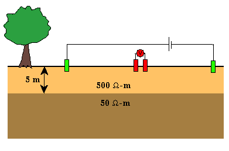
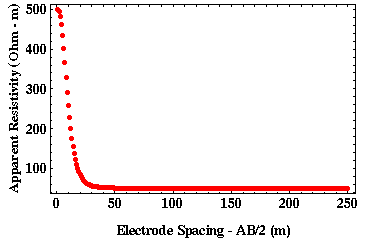
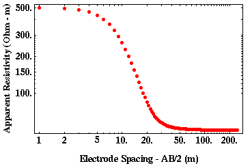
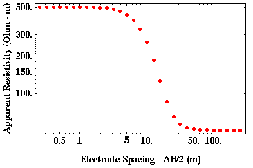

Electrode Spacings and Apparent Resistivity Plots
You may have noticed on the previously shown plots of apparent resistivity that the data were plotted on log-log plots rather than the more traditional linear-linear plots. You should also notice that the electrode distances shown on these plots are evenly spaced in log distance rather than being evenly spaced in linear distance. Why have we chosen to acquire and display the data in this fashion?
Consider performing a Schlumberger sounding over the geologic model shown below.

Let's do our Schlumberger sounding by varying current electrode spacing, AB/2, from 1 to 250 meters at 1 meter increments. Shown below is a plot of the resulting apparent resistivity versus electrode spacing.
We know that for small electrode spacings the apparent resistivity should approximate the resistivity of the top layer. As the electrode spacing increases, the apparent resistivity should approach the resistivity of the halfspace. These are the features that are shown in the plot. They are not, however, emphasized in this plot.

Most of the interesting features of this apparent resistivity curve occur at electrode spacings smaller than 50 meters. When looking at this apparent resistivity curve, because the plot includes so much data at electrode spacings larger than 50 meters, it de-emphasizes the important data at the smaller electrode spacings. One way to help bring out the information content at both the smaller and larger electrode spacings is to plot the same data on a log scale rather than a linear scale. A log-log plot with the same data is shown below. Notice how the smaller electrode spacings now occupy more of the plot, thus making it easier to extract important information about how the apparent resistivity varies with electrode spacing.

Although this plot is better, there is still one problem related to how the data were acquired. Notice that there are only a few readings made at the small electrode spacings that are approximately equal to 500 ohm-m, and there are many at the larger electrode spacings that are approximately equal to 50 ohm-m. We would like more readings at the smaller electrode spacings so that we can be assured that the apparent resistivities plotted are representative of the near-surface resistivity. This could be done at the cost of taking fewer readings at the larger electrode spacings. By reallocating the electrode spacings that we will use, we will not only acquire observations that are more relevant, but we could also speed up our field acquisition by eliminating those readings that do not contain new information.
For electrical soundings, electrode spacings commonly are chosen so that they are evenly spaced in log distance rather than being evenly spaced in linear distance to address the problem described above. Shown below is a plot of log apparent resistivity versus log electrode spacing, where the distance interval is now chosen to be evenly spaced in log distance rather than linear distance. Now there are approximately as many samples showing apparent resistivities of 500 ohm-m as there are of 50 ohm-m. In addition, the transition between these two extremes is well-sampled.

In the example shown above, we acquired the data such that there are 9 soundings for every decade (power of 10) in distance beginning at 0.25 meters. Thus, soundings with current electrode separations, AB/2, of 0.25, 0.5, 0.75, 1.0, 1.25, 1.5, 1.75, 2.0, 2.25, 5.0, 7.5, 10.0, 12.5, 15.0, 17.5, 20.0, 22.5, 50.0, 75.0, 100.0, 125.0, 150.0, 175.0, 200.0, and 250.0 meters were taken.
This example clearly shows that using a log-distance scheme to acquire electrical data provides information at the densities required over all distance ranges. For most surveys, acquiring 9 readings per decade of distance is not necessary. The most common electrode spacing used is one that employs 6 soundings for every decade in distance. For this example, using six points per decade would yield electrode spacings of 0.25, 3.67, 5.39, 7.91, 1.16, 1.70, 2.5, 3.67, 5.39, 7.91, 11.6, 17.0, 25.0, 36.7, 53.9, 79.1, 116.0, 170.0, 250.0.
Resistivity
- Current Flow and Ohm's Law pg 4
- The Fund. Electrical Property is Resistivity, NOT Resistance pg 5
- Resistivities for Common Earth Materialspg 6
- Current Density and Electric Fieldpg 7
- A First Estimate of Resistivitypg 8
- Current Flow From Two Closely Spaced Electrodespg 9
- A Practical Way of Measuring Resistivity pg 10
- Sources of Noise pg 11
- Depth of Current Penetration V.S. Current ElectrodeSpacing pg 12
- Current Flow in Layered Media pg 13
- Variation in Apparent Resistivity: Layered Versus Homogeneous Media pg 14
- Current Flow in Layered Media Versus Electrode Spacing pg 15
- A Second Example of Current Flow in Layered Mediapg 16